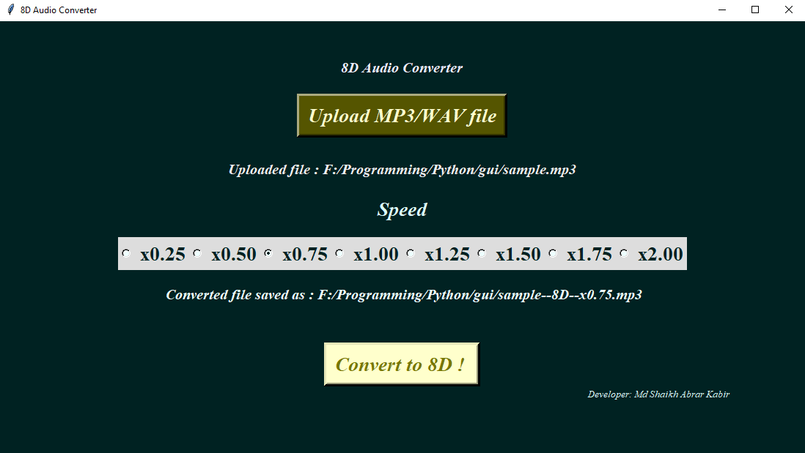

<h1 style="padding-left:4%;padding-top: 2%;padding-bottom: 2%;padding-right: 10%;border-bottom: 1px solid #BDBDBD;">


8D Audio Converter ( Windows Application )


</h1>


Python GUI based application


<h2><a href="8D_tkinter.mp4" target="_blank"> Process </a></h2>


<h2><a href = "https://drive.google.com/open?id=1BDirM-fnq74i_tKBoe6pxcZ5CDmCCL6r" target="_blank" >ZIP File </a></h2>

<h2><a href="sample.mp3" target="_blank"> Normal Audio </a></h2>
<h2><a href="sample--8D--x0.75.mp3" target="_blank"> 8D Audio </a></h2>


